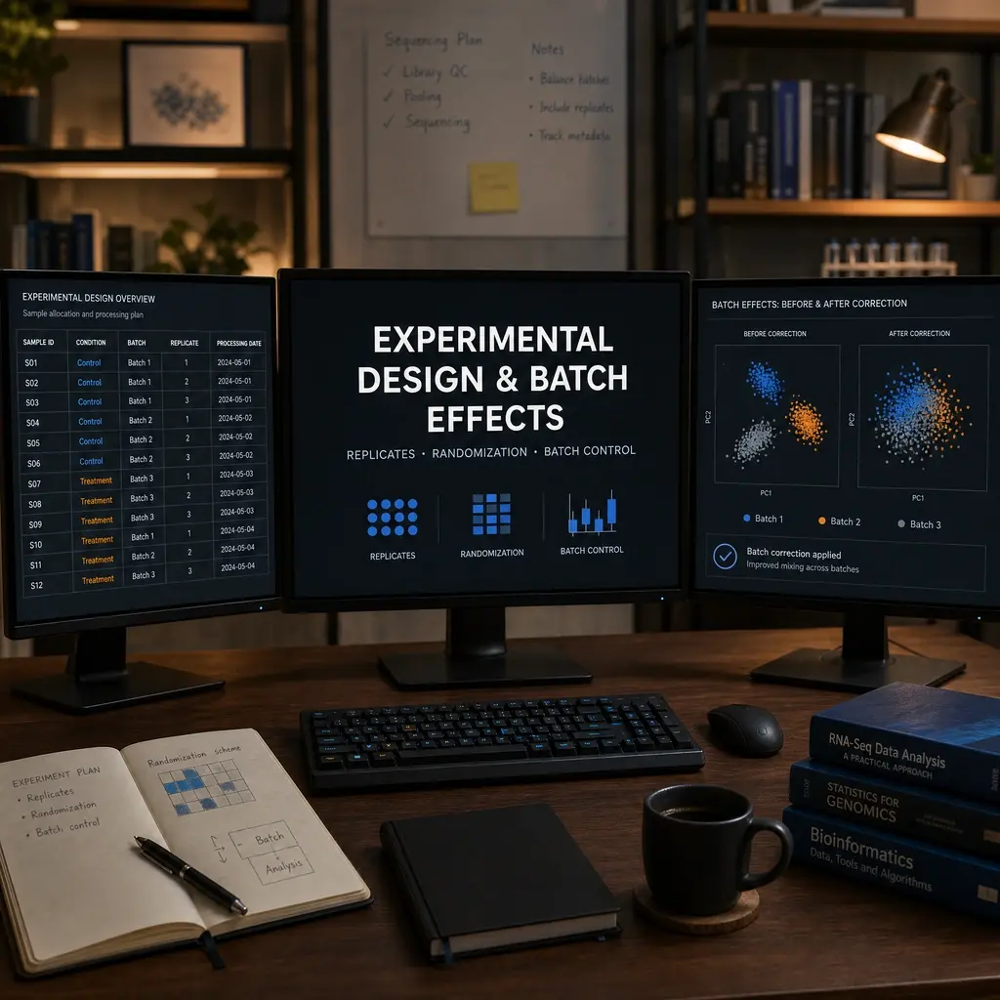

Experimental Design and Batch Effects
Nasir Mahmood Abbasi, PhD
Bioinformatics Educator

Learning objectives and prerequisites
By the end of this lesson you will be able to:
- Define experimental units, biological replicates, technical replicates, and batches, and explain why those distinctions matter for inference.
- Recognize confounding between biological condition and batch, and avoid designs where condition equals batch.
- Create and validate a metadata table (sample sheet) suitable for modeling and batch-aware analyses.
- Plan randomization, blocking, and simple quality-control (QC) steps that reduce batch effects before sequencing.
Prerequisites: basic familiarity with experiment planning and the statistical concept of a covariate. Familiarity with R or Python is helpful because reproducible validation examples are shown. Important conceptual prerequisite: batch correction cannot reliably recover biological signal that the experimental design has made statistically indistinguishable from technical effects.
Why this matters — biological and computational context
Many downstream bioinformatics problems are created before the first sample is processed. If samples assigned to different biological conditions are also processed at different times, using different reagent lots, or by different operators—then the measured differences can reflect technical variation (batch effects) rather than biology. Statistical models treat batch as a covariate that explains some of the observed variation; however, when condition and batch are perfectly confounded (for example, all controls processed in lane 1 and all treatments in lane 2), there is no experimental data to separate biological from technical causes. No computational correction can reliably recover the separate effects in that case.
Careful experimental design reduces the need for aggressive post hoc correction, simplifies modeling, and protects against false discoveries and rejected true effects. Good decisions include choosing the correct experimental unit (the object randomized to treatment), collecting biological replicates (independent units), recording complete metadata (all suspected covariates), and planning randomization or blocking so that batches are balanced across conditions.
Reproducible workflow — files, checks, and example commands
What you should have before following the commands below:
- A comma-separated metadata file (metadata.csv) with one row per biological replicate and columns including at minimum: sample_id, donor (or experimental_unit), condition, batch, library_id, and any other covariates you plan to model (e.g., sex, age, collection_date).
- Raw data files whose filenames include sample_id or a stable mapping file from sample_id to filename (for example, FASTQ files, or processed counts matrix for RNA-seq).
- R (>= 4.0) or Python (>= 3.8) available for the validation checks below. The examples use base R and pandas in Python; additional packages (DESeq2, sva, scikit-learn) are optional and noted when used.
1) Example metadata.csv format
sample_id,experimental_unit,condition,batch,library_id,sex,collection_date
S01,Donor01,control,Lane1,L01,M,2024-01-12
S02,Donor02,control,Lane2,L02,F,2024-01-13
S03,Donor03,treated,Lane1,L03,M,2024-01-12
S04,Donor04,treated,Lane2,L04,F,2024-01-13
Save this as metadata.csv in the working directory for the examples that follow.
2) Basic metadata validation (Python)
These checks treat metadata as primary data: verify identifiers, missingness, consistent factor levels, and that batches contain samples from all experimental conditions when possible.
#!/usr/bin/env python3
# Requires: pandas
import pandas as pd
meta = pd.read_csv("metadata.csv")
# Basic checks
assert meta['sample_id'].is_unique, "sample_id contains duplicates"
assert meta['experimental_unit'].notna().all(), "missing experimental_unit"
assert meta['condition'].notna().all(), "missing condition"
assert meta['batch'].notna().all(), "missing batch"
# Show counts per batch and condition
print(pd.crosstab(meta['batch'], meta['condition']))
# Save a cleaned copy for downstream use
meta.to_csv("metadata.validated.csv", index=False)
print("Validated metadata written to metadata.validated.csv")
What the commands produce:
- Console output of a cross-tabulation of batch by condition (helps spot confounding).
- A file named metadata.validated.csv that you can provide to downstream tools.
3) Same validation in R
# R script: metadata_checks.R
meta <- read.csv("metadata.csv", stringsAsFactors = FALSE)
# Basic checks stop on failure
stopifnot(!anyDuplicated(meta$sample_id))
stopifnot(all(!is.na(meta$experimental_unit)))
stopifnot(all(!is.na(meta$condition)))
stopifnot(all(!is.na(meta$batch)))
# Crosstab
print(with(meta, table(batch, condition)))
# Write validated file
write.csv(meta, "metadata.validated.csv", row.names = FALSE)
cat("Validated metadata written to metadata.validated.csv\n")
4) Visual checks for batch effects (R, PCA example)
If you have an expression or count matrix (rows = features, columns = samples) called counts.csv, the R example below shows a minimal, reproducible workflow to produce a principal component analysis (PCA) plot colored by condition and shaped by batch. This is an exploratory check only; interpretation follows below.
# R script: pca_check.R
# Requires: DESeq2 or base prcomp; this example uses base prcomp after a simple log transform
counts <- as.matrix(read.csv("counts.csv", row.names = 1))
meta <- read.csv("metadata.validated.csv", stringsAsFactors = FALSE)
# Align columns: assume counts columns are sample_id
stopifnot(all(colnames(counts) %in% meta$sample_id))
meta <- meta[match(colnames(counts), meta$sample_id), ]
# Simple transform (log2 CPM-like, for exploratory PCA)
libsize <- colSums(counts)
cpm <- t(t(counts) / libsize * 1e6)
logcpm <- log2(cpm + 1)
# PCA
pca <- prcomp(t(logcpm), center = TRUE, scale. = TRUE)
pc_df <- data.frame(PC1 = pca$x[,1], PC2 = pca$x[,2], meta)
# Save a CSV of PCA coordinates and show a quick textual summary
write.csv(pc_df, "pca_coordinates.csv", row.names = FALSE)
print(summary(pca))
What the commands produce:
- A file pca_coordinates.csv with PC1 and PC2 coordinates for each sample and its metadata.
- Console output summarizing variance explained by principal components.
5) Planning randomization and blocking
Before sample processing, produce a randomized assignment of samples to lanes, plates, or processing batches while blocking on known covariates (for example, balance sex and condition across lanes). Example: create a balanced assignment to two sequencing lanes in Python.
#!/usr/bin/env python3
import pandas as pd
from sklearn.utils import shuffle
meta = pd.read_csv("metadata.validated.csv")
# Simple block: ensure equal numbers of condition per batch (2 lanes)
# This example assumes an even number per group; adapt for odd group sizes
lanes = ["Lane1", "Lane2"]
out = []
for cond, group in meta.groupby('condition'):
group = shuffle(group, random_state=42)
half = len(group) // 2
group.loc[:half-1, 'batch_assignment'] = lanes[0]
group.loc[half:, 'batch_assignment'] = lanes[1]
out.append(group)
assigned = pd.concat(out)
assigned.to_csv("metadata.randomized.csv", index=False)
print("Randomized assignment written to metadata.randomized.csv")
Note: adapt randomization scripts to respect paired designs or blocking by donor (experimental unit). Always record the random seed and the algorithm used so assignments are reproducible.
Output inspection and interpretation
After running the validation and PCA checks, here’s how to interpret common outcomes. Be explicit about what a result suggests and what it does not prove.
- The design goal is cross-tabulation, where each batch contains samples from both conditions (for example, each lane has controls and treated samples). This reduces confounding and lets you model batch and condition effects simultaneously.
- If the PCA shows samples clustering mainly by condition with no clear separation by batch, that suggests minimal batch-driven variation. You can proceed to differential testing but include batch as a covariate to be conservative.
- PCA shows samples clustering primarily by batch: this indicates a strong batch effect. If the design is balanced (both conditions in each batch), include batch in the model and consider batch-correction methods such as limma::removeBatchEffect or ComBat, after careful inspection.
- PCA shows that samples cluster by a covariate you did not expect (e.g., collection_date, operator): investigate and, if possible, include that covariate in downstream models or in blocking during future experiments.
- If the cross-tabulation shows perfect confounding (e.g., batch 1 = all controls, batch 2 = all treated), then no statistical or computational method can independently estimate both effects from the data. The correct fix is experimental: repeat sampling with a balanced design or add new replicates randomized across batches.
Important caution: clustering by batch does not prove that all observed differential expression is technical. Likewise, clustering by condition does not prove there are no technical effects. These visual checks are hypothesis-generating; rigorous modeling and sensitivity analyses are required for robust conclusions.
Troubleshooting — symptoms, likely causes, and fixes
Symptom: All controls are in batch 1 and all treatments are in batch 2
Likely cause: sample processing order mimicked treatment assignment (confounding). Fix: If possible, reprocess a subset of samples so that each batch contains multiple conditions, or collect new samples and randomize them across batches. Document the limitation and avoid batch-correction claims that separate technical from biological effects.
Symptom: PCA shows one sample far from all others
Likely causes: library failure, mislabeling, contamination, or rare biology. Fix: investigate raw diagnostics (FastQC for sequencing reads, mapping rate, insert size), check sample identifiers against lab records, and consider excluding the sample if it fails QC—document the exclusion and reason. Do not casually remove outliers without justification.
Symptom: After batch correction, many expected biology-driven differences disappear
Likely causes: over-correction from using batch-removal methods that do not respect study design (e.g., correcting when batch and condition are partially confounded) or incorrectly specifying the model formula. Fix: revisit the design matrix, ensure all biological covariates are included in the model used by the batch-correction routine (for example, include condition in ComBat's "mod" parameter), and rerun. Consider a sensitivity analysis comparing corrected and uncorrected results.
Symptom: Unexpected covariate (e.g., operator) correlates with principal components
Likely cause: unrecorded or ignored technical variation. Fix: include the covariate in downstream models when possible; for future studies, plan to block or randomize with respect to that covariate.
Limitations, version and reference-data caveats, and responsible use
- Batch-correction methods (ComBat, limma removeBatchEffect, sva) require that batch is not perfectly confounded with the biological variable of interest. These methods adjust for observed batch structure but cannot create information that the experiment did not collect.
- Different sequencing centers, library kits, and aligners produce different systematic biases. When comparing datasets across centers or platforms, be cautious: batch correction may harmonize means but can distort feature-specific variance and downstream inference. Document versions of tools and reference genomes used.
- Software versions matter. Examples here use base R functionality and pandas; for specific packages cite the versions you use (DESeq2, limma, sva, ComBat). Reproducibility requires recording package versions and seeds for randomization. For production pipelines, include checksums for input files and containerized environments where possible.
- Ethical/responsible-use note: do not attempt post hoc correction to salvage a design that is fundamentally confounded for a claim with high stakes (clinical, policy). Report design limitations clearly in methods and supplementary materials.
Next-step checklist
- Create or update a metadata spreadsheet with required columns: sample_id, experimental_unit, condition, batch, library_id, and additional covariates (sex, age, operator, collection_date).
- Run the metadata validation scripts provided above and inspect the batch vs condition cross-tabulation.
- Randomize or block samples across planned processing batches and save a reproducible assignment (record seed and method).
- Produce PCA or other low-dimensional visualizations and inspect clustering by condition and batch before applying batch correction.
- If correction is needed and design supports it, include batch as a covariate in the statistical model and perform a sensitivity analysis with and without batch correction.
- Document all decisions, exclusions, and the software environment (versions) in your project record.
References
- DESeq2 — Bioconductor project page (modeling counts with covariates)
- Johnson, Li & Rabinovic (2007) — Adjusting batch effects in microarray expression data using empirical Bayes methods (ComBat)
- sva package (Surrogate Variable Analysis) — Bioconductor
- ENCODE metadata standards — guidance for recording sample and experiment metadata
- Leek et al. (2010) — Tackling the widespread and critical impact of batch effects in high-throughput data
This tutorial records the software versions used in its examples. Software and package behaviour can change. Please re-check commands against the official documentation. If a command does not work, you find an error, or the tutorial is no longer reproducible, please report it through the Contact page
Author: Nasir Mahmood Abbasi, PhD - Category: Foundations & Prerequisites